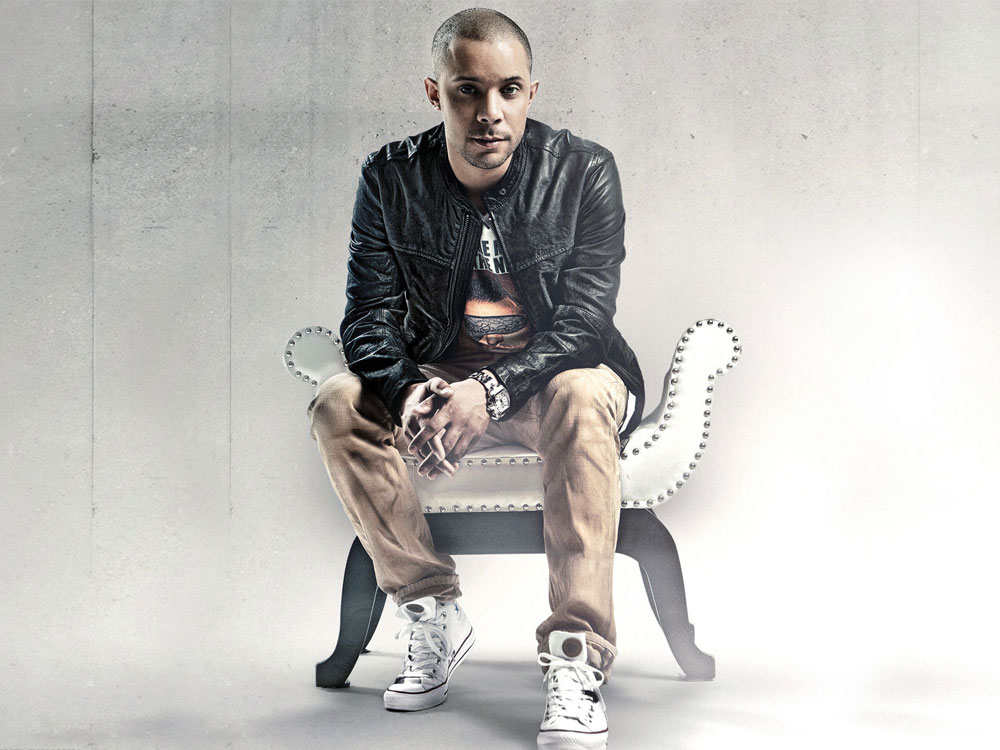

Artiesten
Bekenden Nederlandse hardstyle artiesten
Wildstylez

Headhunterz ookwel Willem Rebergen is 32 jaar oud komt uit Nederland en is vooral door zijn hoogste plaats als een hardstyle dj bekent geworden

Fabian Bohn is 35 jaar komt uit Nederland het is bekent geworden door het radio programma We R Hardstyle op SLAM!FM